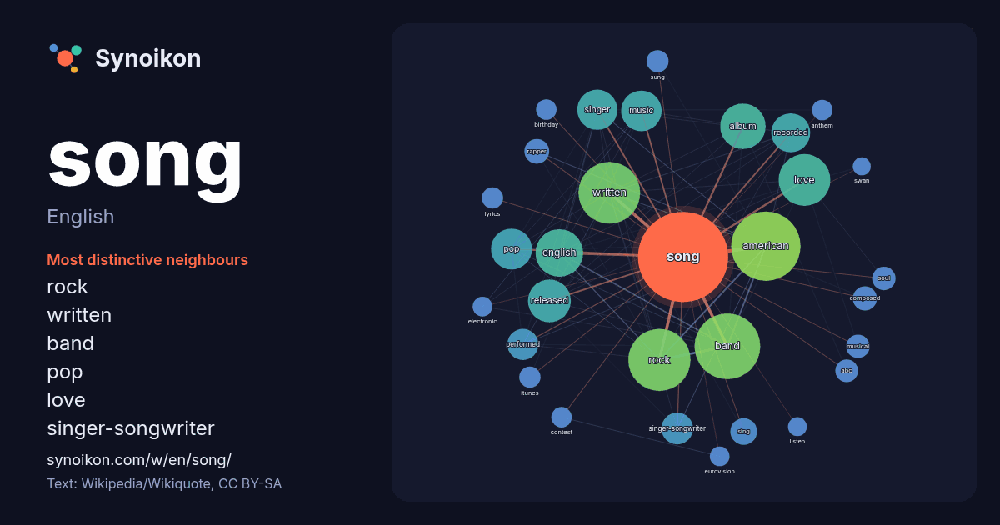

English · word of the day list
song
The words found around it in 1802 instances from English Wikipedia, Wikiquote and Hacker News.

Most distinctive neighbours
- rock 52×
- written 44×
- band 39×
- pop 36×
- love 35×
- singer-songwriter 29×
- singer 27×
- american 24×
- english 23×
- recorded 19×
- sing 19×
- rapper 18×
- soul 14×
- itunes 14×
- sung 14×
- abc 14×
- performed 14×
- anthem 13×
- eurovision 12×
- birthday 12×
× = how many times more often than in general English Wikipedia text.
Most frequent neighbours
- american 149
- band 134
- rock 120
- written 118
- love 83
- english 70
- album 64
- released 57
- pop 52
- music 51
- singer 50
- recorded 47
- group 38
- british 32
- film 31
- singer-songwriter 31
- performed 30
- single 25
- artist 23
- country 23
In context
- Folk songs include ballads, lullabies, love songs, mourning songs, dance songs, work songs, ritual songs and many more. A sporting song is a folk song that Wikipedia snippets · Song
- Songs for You is the fourth studio album by American singer Tinashe and was released independently via her own record label, Tinashe Music Inc., on November Wikipedia snippets · Songs for You
- Brenda Song (born March 27, 1988) is an American actress. Born in Carmichael, California, Song began her career at the age of six, working as a child Wikipedia snippets · Brenda Song
- creates musical compositions or writes lyrics for songs, or both. The writer of the music for a song can be called a composer, although this term tends Wikipedia snippets · Songwriter
- Song to Song is a 2017 American experimental romantic drama film written and directed by Terrence Malick and starring an ensemble cast including Rooney Wikipedia snippets · Song to Song
- "Name" is a song by American rock band Goo Goo Dolls. It was released in September 1995 as the third single from their fifth studio album, A Boy Named Wikipedia snippets · Name (song)
- Songs in the Key of Life is the eighteenth studio album by the American singer, songwriter and musician Stevie Wonder. A double album which included an Wikipedia snippets · Songs in the Key of Life
- Songwriters Hall of Fame. In 1983, Iglesias was credited as having recorded songs in the most languages in the world, and in 2013 for being the best-selling Wikipedia snippets · Julio Iglesias
More English words
- art
- autumn
- bell
- bread
- bridge
- cat
- city
- climate
- clock
- death
- desert
- dog
- family
- food
- forest
- garden
- god
- gold
- health
- heart
- history
- honey
- horse
- island
- language
- life
- map
- mirror
- money
- mother
- mountain
- nature
- power
- rain
- road
- salt
- science
- shadow
- silence
- star
- storm
- summer
- tea
- time
- train
- truth
- water
- winter
- work
Precomputed on 2026-10-09 with default settings (±5 words, medium corpus). The interactive map can refresh it with live data.